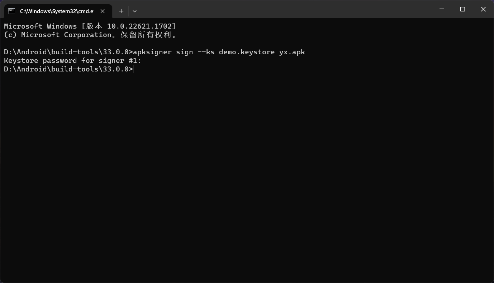

使用工具apksigner为你的APK手动签名
1.在进行apk签名之前，你需要确保已经安装了JDK，然后安装在Android SDK，在Android SDK的根目录中，你会找到apksigner工具的路径
2.在进行签名之前，你需要准备好签名文件。签名文件通常由以下几个部分组成
私钥（key）：这个文件是你用来创建数字签名的关键文件。你可以使用Java的keytool工具来生成一个私钥文件。运行以下命令来生成私钥文件：keytool -genkey -v -keystore your_keystore_name.keystore -alias your_alias_name -keyalg RSA -keysize 2048 -validity 10000。根据提示输入相关信息并设置密码。
公钥证书（certificate）：这个文件是你的应用程序的数字证书。你可以通过运行以下命令来生成公钥证书文件：keytool -export -rfc -keystore your_keystore_name.keystore -alias your_alias_name -file your_certificate.crt。根据提示输入密码和证书文件名。
使用apksigner工具签名apk文件
$ apksigner sign --ks demo.keystore test.apk
验证签名：apksigner verify --verbose test.apk
发表于2023-8.3